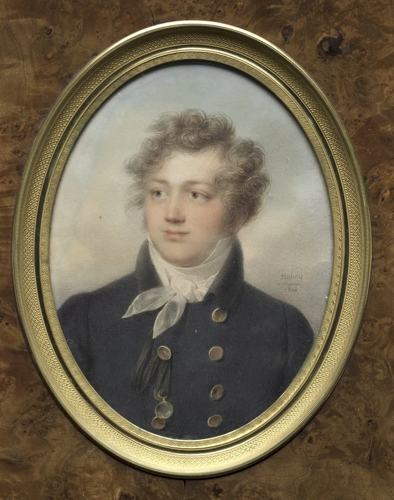

OKpolítico
OKpolítico1817 (II): Mina, Arredondo y la resistencia del sur

En este episodio (parte 2), exploramos la travesía de la expedición liberal de Francisco Xavier Mina, la respuesta militar del virrey Apodaca y sus generales Arredondo y Liñán, y la incansable resistencia de Vicente Guerrero en las montañas del sur. Analizamos la política de indultos, el sitio del F
Compartir por WhatsApp▶ Ver este video en YouTube y suscríbete
El mundo en 1817
El año 1817 se enmarca en la etapa de la posguerra napoleónica, donde las potencias europeas buscaban restaurar el orden monárquico absoluto tras el Congreso de Viena de 1815. En España, Fernando VII había abolido la Constitución de Cádiz en 1814, reinstaurando el absolutismo y generando tensiones con los liberales exiliados, como Francisco Xavier Mina.
Mientras tanto, en América, las potencias anglosajonas consolidaban su influencia. El 28 de abril de 1817, Estados Unidos y Reino Unido firmaron el Tratado de Rush-Bagot, desmilitarizando los Grandes Lagos y reduciendo tensiones en la frontera norteamericana tras la guerra de 1812.
✉️ Recibe lo importante del día en tu correo. Suscríbete gratis →En América Latina, los movimientos independentistas avanzaban con ritmos distintos. En el norte de Sudamérica, Simón Bolívar reorganizaba sus tropas en Guayana, mientras que en el Caribe, el general español Pablo Morillo, al mando de una expedición punitiva,
ocupó la isla de Margarita en julio de 1817. Sin embargo, su retirada forzada en agosto, tras la derrota en la batalla de Matasiete, demostró la resistencia de los independentistas.
Estos eventos presionaron a la Corona española a reforzar su control en la Nueva España, donde el virrey Juan Ruiz de Apodaca implementaba una política de indultos para desarticular la insurgencia. En la Nueva España, el virrey Apodaca, quien había asumido el cargo en 1816, enfrentaba una insurgencia fragmentada tras la ejecución de José María Morelos en 1815.
Para contener los focos rebeldes, combinó la presión militar con una ofensiva diplomática: emitió decretos de indulto en mayo de 1817, invitando a los insurgentes a deponer las armas a cambio de perdón.
Esta estrategia logró convencer a figuras como Carlos María de Bustamante y José María Cos, pero no a caudillos irreductibles como Vicente Guerrero, quien rechazó cualquier oferta de paz.
Apodaca y la política de indultos
En mayo de 1817, el virrey Apodaca intensificó su política de indultos, publicando proclamas que exhortaban a los insurgentes a rendirse. Esta estrategia buscaba desarticular el movimiento desde sus bases, ofreciendo perdón y restitución de derechos civiles a quienes depusieran las armas.
Figuras como Bustamante y Cos aceptaron el indulto, debilitando la estructura de mando insurgente. Sin embargo, la política no logró convencer a líderes como Vicente Guerrero, quien operaba en las montañas del sur y rechazaba cualquier negociación con la Corona.
La Junta de Jaujilla, instalada en Michoacán, emitió un manifiesto el 24 de mayo de 1817, condenando los indultos y reafirmando su compromiso con la independencia absoluta. Este documento buscaba unir a los insurgentes bajo una causa común, rechazando cualquier intento de reconciliación con el régimen colonial.
Mientras tanto, en el Bajío, la resistencia se organizaba en torno a Pedro Moreno, quien se preparaba para recibir la expedición de Mina. Ante la resistencia de líderes como Guerrero, Apodaca encomendó al general Joaquín de Arredondo la tarea de sofocar los focos rebeldes en el norte y centro del país.
Arredondo, comandante de las Provincias Internas de Oriente, recibió órdenes de perseguir a las fuerzas insurgentes que amenazaban con reorganizar el movimiento. Esta doble estrategia —indultos para los vacilantes y ofensiva militar para los irreductibles— definió la respuesta virreinal a las nuevas amenazas, como la expedición de Mina.
Mina avanza por el Bajío
El 22 de abril de 1817, Francisco Xavier Mina desembarcó en Soto la Marina, Tamaulipas, al mando de una expedición de alrededor de 300 hombres. Dos días después, publicó un manifiesto en el que condenaba el absolutismo de Fernando VII y proclamaba su adhesión a la Constitución de Cádiz de 1812.
Mina buscaba unir a liberales españoles y insurgentes mexicanos bajo una causa común: la independencia y la restauración constitucional. Consciente de la vulnerabilidad de la costa, Mina avanzó hacia el interior del país.
El 24 de mayo, sus tropas ocuparon la Hacienda de El Cojo, donde se apoderaron de 700 caballos, un recurso logístico crucial para su avance hacia el Bajío. Este movimiento le permitió consolidar su presencia en una región estratégica, rica en recursos mineros y agrícolas, clave para la insurgencia.
El 15 de junio de 1817, Mina derrotó a las tropas realistas en Peotillos, comandadas por Cristóbal Ordóñez y Arminán. Aunque numéricamente inferior, la disciplina y táctica de Mina permitieron una victoria que debilitó el prestigio militar realista.
Pocos días después, el 24 de junio, Mina llegó al Fuerte del Sombrero, en Guanajuato, donde se reunió con Pedro Moreno, uniendo sus fuerzas bajo un mando común. La alianza entre Mina y Moreno transformó el Fuerte del Sombrero en el centro neurálgico de la resistencia en el Bajío.
Esta unión amenazaba directamente las rutas de abastecimiento y la producción minera de Guanajuato, Zacatecas y Querétaro, regiones clave para la economía novohispana. La Corona respondió con una ofensiva militar sin precedentes.
La reacción realista: Arredondo y Liñán
El desembarco de Mina y su avance hacia el Bajío desencadenaron una respuesta inmediata del virrey Apodaca. El general Joaquín de Arredondo, ya ascendido a brigadier en 1817, recibió órdenes de sitiar el fuerte de Soto la Marina, donde Mina había dejado una guarnición.
El 11 de junio, Arredondo estableció un cerco terrestre y marítimo sobre la posición, cortando cualquier posibilidad de escape o refuerzos. El 13 de junio, tras un intenso bombardeo, Arredondo tomó el fuerte de Soto la Marina.
Las autoridades virreinales ejecutaron a varios insurgentes como escarmiento y capturaron a Servando Teresa de Mier, ideólogo clave de la expedición. Mier fue enviado a la Ciudad de México para ser juzgado por el Tribunal de la Inquisición y el cabildo eclesiástico, acusándolo de sedición y desacato a la Corona.
Mientras Arredondo aseguraba la costa, el mariscal Pascual de Liñán, al mando del Regimiento de Fernando VII (conocido también como Regimiento de Zaragoza), concentró más de 2,500 hombres y artillería pesada para atacar el Fuerte del Sombrero.
El 31 de julio, Liñán llegó a las inmediaciones del fuerte y comenzó un sitio sistemático, cortando el suministro de agua, alimentos y municiones a las tropas de Mina y Moreno. El sitio del Fuerte del Sombrero se volvió insostenible.
Aunque las tropas insurgentes rechazaron el primer asalto el 4 de agosto, la falta de recursos obligó a Mina a intentar una salida desesperada el 8 de agosto. Sin embargo, Liñán bloqueó cualquier intento de romper el cerco.
La situación se volvió crítica, y el 20 de agosto, tras semanas de resistencia, Liñán tomó el fuerte, masacrando a los defensores. Mina, Moreno y alrededor de mil combatientes lograron escapar hacia las montañas.
Guerrero y la resistencia del sur
Mientras Mina y Moreno luchaban en el Bajío, Vicente Guerrero mantenía viva la resistencia en las montañas del sur, operando desde campamentos como Atlamajalcingo en Michoacán. Guerrero, de origen mestizo e indígena, utilizaba tácticas de guerrilla para emboscar convoyes realistas y cortar rutas de abastecimiento entre Acapulco y la Ciudad de México.
Su conocimiento del terreno y su capacidad para fabricar armamento le permitieron sostener una guerra de desgaste contra las tropas virreinales. El 20 de mayo de 1817, el insurgente Víctor Rosales cayó en combate en La Campana, Michoacán, tras enfrentar a las tropas realistas de Manuel Muñiz y Miguel Barragán.
Aunque Rosales fue una figura clave en la resistencia central, su muerte no detuvo a Guerrero, quien asumió el liderazgo unificado de las tropas en la sierra del sur. La Junta de Jaujilla, instalada en Michoacán, emitió un manifiesto el 24 de mayo reafirmando su compromiso con la independencia absoluta.
Para contener a Guerrero, el virrey Apodaca asignó al coronel Agustín de Iturbide, quien para 1817 ya había sido ascendido a brigadier, la tarea de vigilar el sur. Iturbide, aunque realista, comenzó a percibir las limitaciones de la estrategia militar para sofocar la insurgencia.
Las constantes emboscadas de Guerrero obligaron a las tropas realistas a mantener contingentes fijos en la región, impidiendo que Iturbide enviara refuerzos a Liñán durante la batalla del Bajío.
El proceso contra Servando Teresa de Mier
Tras su captura en Soto la Marina el 13 de junio de 1817, Servando Teresa de Mier fue enviado a la Ciudad de México para ser juzgado. El cabildo eclesiástico de Monterrey inició una causa en su contra por sedición y desacato, y el 31 de julio, el Tribunal de la Inquisición solicitó su traslado a las cárceles secretas.
El proceso buscaba no solo castigar a Mier, sino deslegitimar las ideas liberales y constitucionales que promovía su expedición. El juicio de Mier reflejó la alianza entre el poder militar y eclesiástico del virreinato.
Mientras Liñán y Arredondo aplastaban militarmente a los insurgentes, el Tribunal de la Inquisición y los cabildos eclesiásticos perseguían a sus ideólogos. Aunque Mier fue encarcelado, sus escritos continuaron circulando entre los círculos liberales, demostrando que la represión no logró erradicar las ideas independentistas.
El 30 de octubre de 1817, Mier fue enviado a España para ser juzgado por tribunales peninsulares. Su caso simbolizó la determinación de la Corona española para erradicar cualquier brote de liberalismo en sus colonias, incluso a través de la persecución ideológica.
Conclusión del tramo: la tensión que se avecina
A finales de agosto de 1817, la caída del Fuerte del Sombrero marcó un punto de inflexión en la guerra. Aunque Mina y Moreno lograron escapar, su derrota debilitó la resistencia en el Bajío.
El virrey Apodaca aprovechó la victoria para emitir nuevas proclamas de indulto, invitando a los rebeldes a rendirse. Sin embargo, la huida de Mina y Moreno demostró que la insurgencia aún tenía capacidad de reorganizarse, especialmente en el sur, donde Guerrero seguía activo.
La situación militar al cerrar agosto de 1817 era ambigua. Aunque el virreinato había logrado contener los principales focos de resistencia en el Bajío y la costa, la insurgencia persistía en el sur bajo el mando de Guerrero.
Este escenario planteaba una pregunta clave: ¿podría el virreinato erradicar definitivamente la insurgencia, o el conflicto entraría en una nueva fase con la participación de figuras como Agustín de Iturbide,
quien comenzaba a cuestionar la viabilidad de la estrategia militar?
Repercusiones internacionales y el futuro de la independencia
Las noticias sobre la expedición de Mina y su derrota resonaron en Europa y Estados Unidos. En Madrid, los liberales exiliados observaban con frustración cómo la Corona española sofocaba cualquier intento de reforma constitucional en sus colonias.
Mientras tanto, en Londres, analistas británicos interpretaban los eventos en la Nueva España como una señal del declive del poder español en América, un fenómeno que beneficiaba los intereses comerciales británicos. En el ejército virreinal, oficiales como Agustín de Iturbide comenzaron a cuestionar la eficacia de la estrategia militar para sofocar la insurgencia.
Iturbide, quien había combatido a Guerrero en el sur, reconoció que la guerra de desgaste no lograría una victoria definitiva. Este cambio de perspectiva sentaría las bases para su posterior alianza con los insurgentes y la negociación que culminaría con el Plan de Iguala en 1821.
Sigue viendo
Con información de
Del Arenal Fenochio, Jaime. Cronología de la Independencia (1808-1821). Instituto Nacional de Estudios Históricos de las Revoluciones de México. · Wikipedia — Anexo:México en 1817 · De Pedro, Antonio E. (2015). «Las dos proclamas de Francisco Xavier Mina: de héroes y villanos». Revista Historia y MEMORIA (Universidad Pedagógica y Tecnológica de Colombia). · Britannica — Juan José Ruiz de Apodaca · Wikipedia — Vicente Guerrero